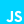

Personal Portfolio Website
TBUCO Course
A personal portfolio website built from scratch to document my BTS Cloud Computing journey. It covers 8 projects with dedicated detail pages, professional certifications, internships and external professional visits, a BTS progress overview, and a contact section — all in English and French.
To create a living digital portfolio that grows alongside my studies, giving anyone a clear and complete picture of my technical skills, projects, and professional development.
Semantic HTML structure providing the foundation for all pages, ensuring accessibility and proper document organization.
Custom styling with modern CSS features including glass morphism effects, responsive design, flexbox layouts, and smooth animations.

Client-side functionality including a custom-built internationalization (i18n) system that handles all EN/FR translations via a single translations object, with language preference persisted in localStorage.
Free static site hosting through GitHub Pages, enabling easy deployment and version control for continuous updates.
Full EN/FR internationalization across every page and project, with a language switcher in the navigation bar and persistent preference via localStorage.
Eight dedicated project pages each covering an overview, topics, technical stack, my personal contribution, and downloadable documentation where available.
Display of professional Microsoft certifications with links to official verification on Credly.
Documents internships, educational visits, and external professional visits — including mock interviews, guest lectures, and company tours done as part of the BTS programme.
An overview of what I learned throughout the BTS, covering technical skills and soft skill development across all courses and projects.
Direct download buttons for both English and French versions of my CV, accessible from the home page.
The full source code for this portfolio is publicly available on GitHub:
This portfolio will keep evolving throughout and beyond the BTS:
• Add new projects as they are completed
• Include additional certifications and achievements
• Keep the BTS Progress and Experiences pages up to date
• Continue refining the design and user experience